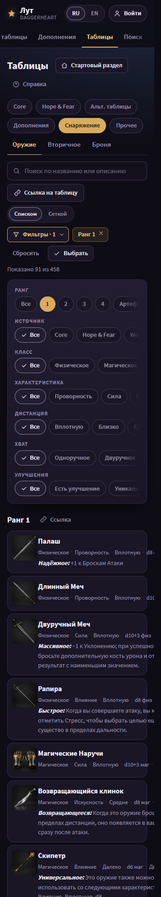
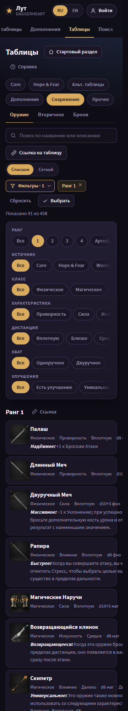
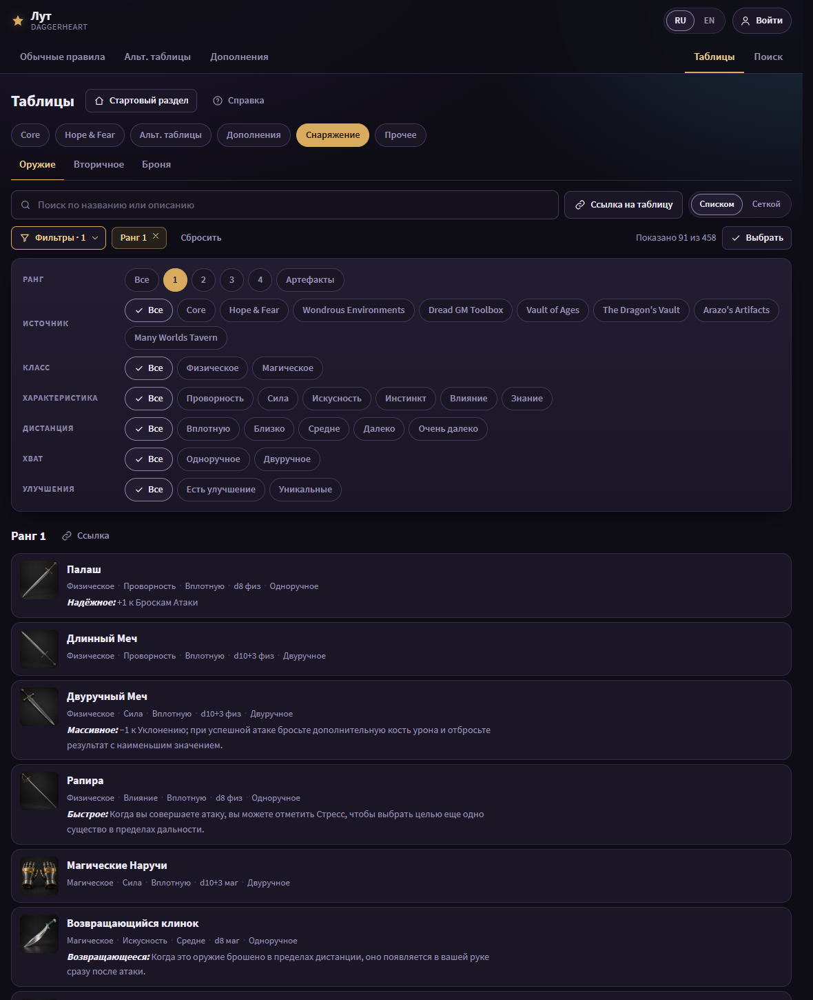
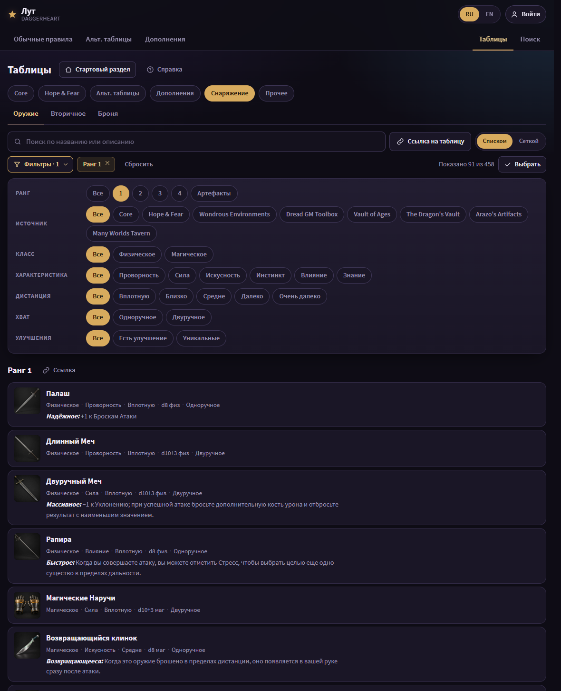
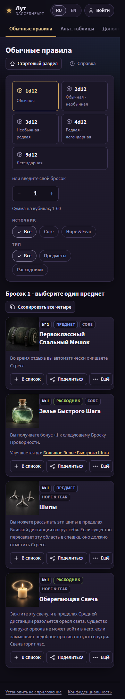
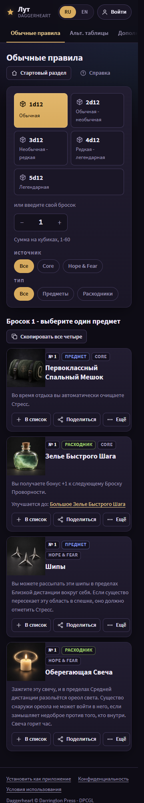
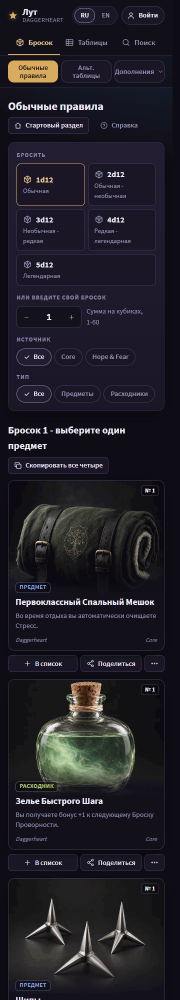
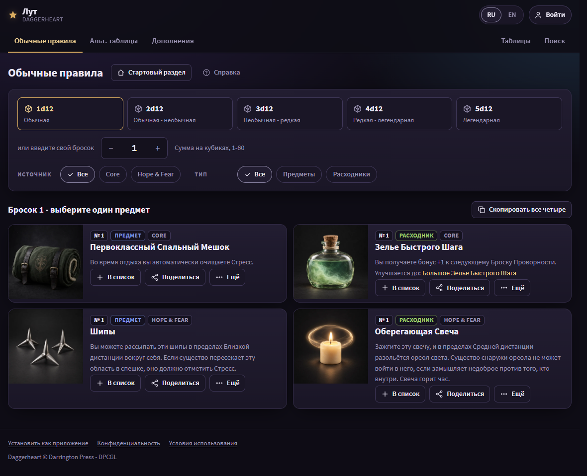
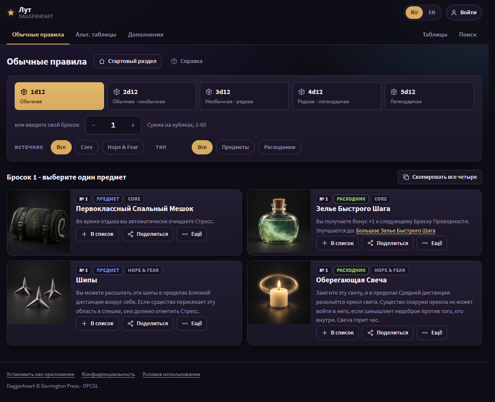
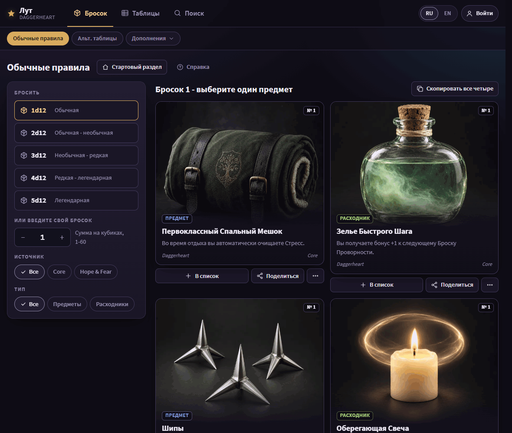

A1 and A2 differ only in where gold goes. In A1, gold marks one primary action and what you chose. In A2, gold also stays on choices that are on by default. The card face is option C's way of drawing a roll result; R shows it inside B's two-pane roller, so the layout around it is not A's.









